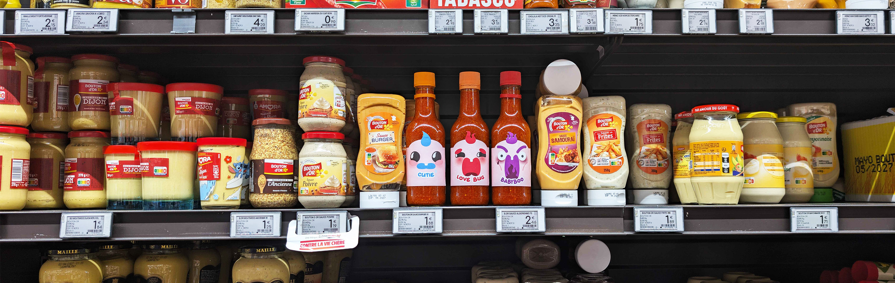
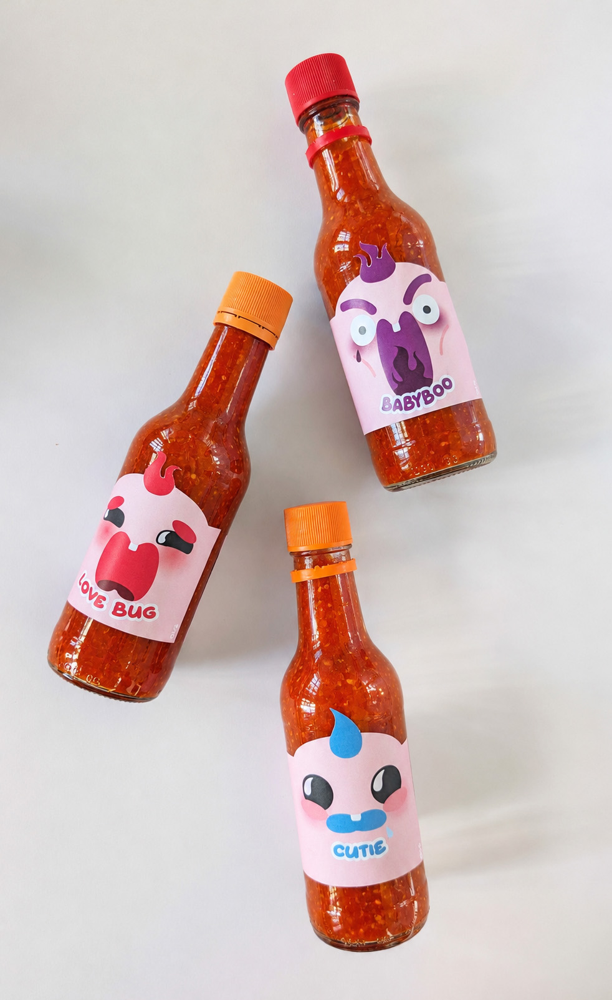
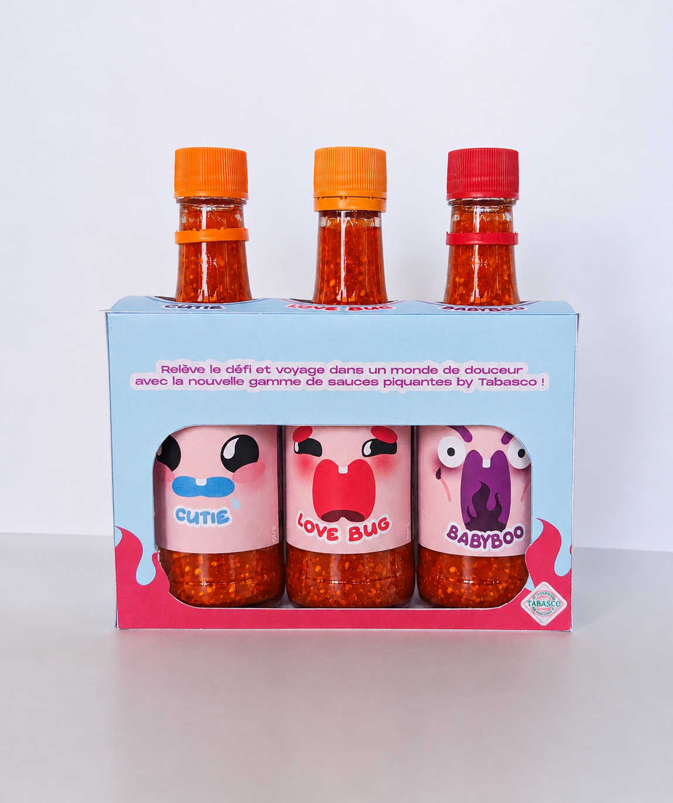
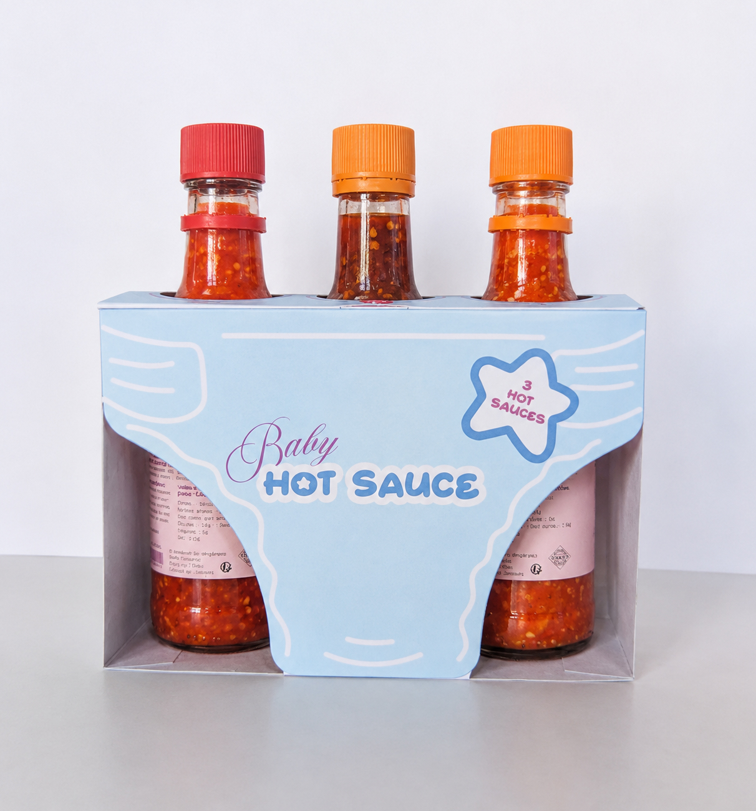

Babyboo
Réalisation et déclinaison des étiquettes d’une nouvelle gamme de 3 sauces Tabasco aux saveurs exotiques, originales et réputées pour leur niveau de piment.
J’ai pris la décision de souligner l’épicé des sauces en reprenant des codes visuels radicalement opposés (liés à l’enfance). Le produit vient à la fois se démarquer de ses concurrents tout en proposant un jeu de résistance «cap ou pas cap?» si même un enfant y arrive, pourquoi pas vous?



Project Babyboo - 2026